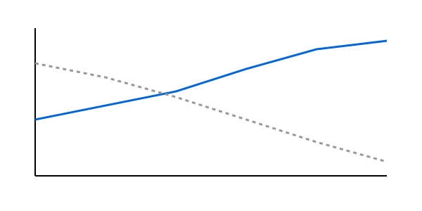

Inteligencia artificial y futuro cientÁfico
│ │ │ │Aprendizaje automático, reconfiguración del │ │ │ │ conocimiento y el futuro de la investigación
│ │ │ │AnÁbal M. Astobiza
│ │ │ │Universidad de Granada
│ │ │ │ │ │
│ │
│ │
│ │ Resumen Ejecutivo
│ │ │ │- │ │
│ │
- ✓ La teorÁa no desaparece: se redistribuye en │ │ │ │ las infraestructuras de datos y arquitecturas de ML │ │ │ │
- âš ï¸ La automatización acelera el descubrimiento │ │ │ │ pero introduce sesgos sistémicos y crisis de reproducibilidad │ │ │ │
- 👩‍🎓 El cientÁfico evoluciona de ejecutor a │ │ │ │ director estratégico, validador crÁtico y curador epistémico │ │ │ │
Motivación: La Transformación de la Ciencia
│ │ │ │DesafÁo Central:
│ │ │ │- │ │
│ │
- 200+ millones de estructuras proteicas │ │ │ │ predichas por AlphaFold │ │ │ │
- Laboratorios automatizados que ejecutan │ │ │ │ miles de experimentos/dÁa │ │ │ │
- Modelos opacos tomando decisiones │ │ │ │ crÁticas │ │ │ │
La Provocación de Chris Anderson
│ │ │ ││ │ │ │ "El diluvio de datos hace obsoleto el método │ │ │ │ cientÁfico. Con suficientes datos, los números hablan por sà mismos. La │ │ │ │ correlación es suficiente." │ │ │ ││ │ │ │
— Chris Anderson, │ │ │ │ Wired (2008)
│ │ │ ││ │ │ │ ¿Realmente marca el Big Data el fin de la teorÁa │ │ │ │ cientÁfica? │ │ │ │
│ │ │ │Hoja de Ruta
│ │ │ │- │ │
│ │
- La epistemologÁa cambiante del │ │ │ │ conocimiento cientÁfico │ │ │ │
- La automatización del │ │ │ │ descubrimiento: promesa y peligro │ │ │ │
- El humano en el bucle: autorÁa, │ │ │ │ agencia y futuro │ │ │ │
Parte │ │ │ │ I
│ │ │ │La EpistemologÁa Cambiante del Conocimiento │ │ │ │ CientÁfico
│ │ │ │El Viaje de los Datos: Sabina Leonelli
│ │ │ │Conceptos Clave:
│ │ │ │- │ │
│ │
- Datos │ │ │ │ como categorÁa relacional: no son "dados", son construidos │ │ │ │
- Viaje de │ │ │ │ datos: Descontextualización → Recontextualización │ │ │ │
- Curadores como productores: trabajo invisible de │ │ │ │ hacer datos útiles │ │ │ │
Comprensión y Opacidad: Emily Sullivan
│ │ │ │Tesis Central
│ │ │ │La barrera para la comprensión en ML no es la │ │ │ │ opacidad interna, sino la falta de │ │ │ │ evidencia que conecte el modelo con el fenómeno.
│ │ │ │Implicaciones
│ │ │ │- │ │
│ │
- La opacidad tolerable depende del contexto │ │ │ │ de aplicación │ │ │ │
- Los valores éticos moldean los estándares de │ │ │ │ validación │ │ │ │
Convergencia Teórica
│ │ │ │AI for Science: La Complejidad del Siglo XXI
│ │ │ │🌠Sistemas Interconectados
│ │ │ │Natural + Tecnológico + Humano
│ │ │ │â±ï¸ Escalas Múltiples
│ │ │ │Temporal y espacial
│ │ │ │🔄 Comportamientos Emergentes
│ │ │ │Interacciones complejas
│ │ │ │🧠Análisis AI
│ │ │ │Herramientas analÁticas avanzadas
│ │ │ │Simulación y Modelado HÁbrido: Bridging the Gap
│ │ │ │🔬 Mecanicista
│ │ │ │Leyes fÁsicas
Conocimiento │ │
│ │ estructurado
📊 Data-Driven
│ │ │ │Patrones emergentes
Aprendizaje │ │
│ │ automático
│ │ │ │ Objetivo: Crear representaciones │ │ │ │ digitales fieles que permitan experimentación sin restricciones fÁsicas │ │ │ │
│ │ │ │Causalidad e Invariancias: Más Allá de la │ │ │ │ Correlación
│ │ │ │🯠Objetivos Clave:
│ │ │ │- │ │
│ │
- Generalización robusta: │ │ │ │ funcionamiento bajo distribuciones variables │ │ │ │
- Representaciones │ │ │ │ causales: integración de simetrÁas fÁsicas │ │ │ │
- Invariancias: │ │ │ │ conservación de propiedades fundamentales │ │ │ │
🔠Resultado
│ │ │ │Sistemas de IA que distinguen relaciones │ │ │ │ causales reales de co-ocurrencias estadÁsticas, permitiendo predicciones │ │ │ │ más confiables y explicables.
│ │ │ │Integración del Conocimiento CientÁfico en IA
│ │ │ │Leyes FÁsicas
│ │ │ │Conservación de energÁa, momento, masa
│ │ │ │Centauros CientÁficos
│ │ │ │Humano + máquina
│ │ │ │Laboratorios Virtuales
│ │ │ │Experimentación digital acelerada
│ │ │ ││ │ │ │ "Los sistemas de IA más efectivos son aquellos │ │ │ │ que incorporan el conocimiento cientÁfico acumulado durante siglos, no │ │ │ │ los que intentan descubrir todo desde cero." │ │ │ ││ │ │ │
El Futuro de la Investigación │ │ │ │ Interdisciplinaria
│ │ │ │Science
│ │ │ │ Punto de Encuentro │ │ │ │ La IA para la ciencia como convergencia de múltiples experticias │ │ │ │
│ │ │ │Estado del Arte
│ │ │ │Panorama Actual de la IA en Ciencia
│ │ │ │Paradigmas CientÁficos: Evolución Histórica
│ │ │ │| Paradigma | │ │ │ │Era | │ │ │ │Método | │ │ │ │Ejemplo | │ │ │ │
|---|---|---|---|
| EmpÁrico | │ │ │ │Milenios | │ │ │ │Observación | │ │ │ │AstronomÁa antigua | │ │ │ │
| Teórico | │ │ │ │Siglos | │ │ │ │Modelos | │ │ │ │Leyes de Newton | │ │ │ │
| Computacional | │ │ │ │Décadas | │ │ │ │Simulación | │ │ │ │Modelos climáticos | │ │ │ │
| Data-intensivo | │ │ │ │Actual | │ │ │ │ML + Big Data | │ │ │ │AlphaFold, LLMs | │ │ │ │
│ │ │ │ Cambio fundamental: de hipótesis → │ │ │ │ datos a datos → hipótesis │ │ │ │
│ │ │ │Aplicaciones Revolucionarias
│ │ │ │BiologÁa:
│ │ │ │- │ │
│ │
- AlphaFold: 200M+ estructuras │ │ │ │
- Diseño de fármacos con IA │ │ │ │
- Predicción de mutaciones │ │ │ │
FÁsica:
│ │ │ │- │ │
│ │
- Detección de ondas gravitacionales │ │ │ │
- Análisis del LHC │ │ │ │
- Simulaciones cuánticas │ │ │ │
DesafÁos Sistémicos Actuales
│ │ │ â”‚âš ï¸ Crisis de Reproducibilidad:
│ │ │ │- │ │
│ │
- 70% de estudios ML no │ │ │ │ reproducibles │ │ │ │
- Falta de documentación │ │ │ │
- Hiperparámetros ocultos │ │ │ │
🛠Sesgo AlgorÁtmico:
│ │ │ │- │ │
│ │
- Algoritmos médicos │ │ │ │ discriminatorios │ │ │ │
- Datos no representativos │ │ │ │
- Amplificación de desigualdades │ │ │ │
Métodos
│ │ │ │Arquitectura del CientÁfico AlgorÁtmico
│ │ │ │Pipeline de Investigación Automatizada
│ │ │ │Algoritmo: Robot Scientist
│ │ │ │class RobotScientist: │ │
│ │ def __init__(self, knowledge_base, lab_equipment): │ │
│ │ self.kb = knowledge_base │ │
│ │ self.lab = lab_equipment │ │
│ │ self.hypotheses = [] │ │
│ │ │ │
│ │ def generate_hypotheses(self, observations): │ │
│ │ # Usar ML para generar hipótesis candidatas │ │
│ │ candidates = self.ml_model.predict(observations) │ │
│ │ return self.rank_by_novelty(candidates) │ │
│ │ │ │
│ │ def design_experiment(self, hypothesis): │ │
│ │ # Optimización bayesiana para diseño eficiente │ │
│ │ return self.bayesian_optimizer.suggest(hypothesis) │ │
│ │ │ │
│ │ def execute(self, experiment): │ │
│ │ return self.lab.run_automated(experiment)Arquitectura del Sistema
│ │ │ │Componentes Clave:
│ │ │ │- │ │
│ │
- Data Layer: MongoDB, │ │ │ │ PostgreSQL │ │ │ │
- Processing: PyTorch, │ │ │ │ JAX │ │ │ │
- Automation: ROS, │ │ │ │ LabVIEW │ │ │ │
- Interface: REST │ │ │ │ APIs │ │ │ │
Protocolo de Validación
│ │ │ │Validación en Tres Niveles
│ │ │ │- │ │
│ │
- Técnica: Métricas de ML │ │ │ │ (accuracy, F1, AUC) │ │ │ │
- CientÁfica: │ │ │ │ Reproducibilidad, generalización │ │ │ │
- Ética: Sesgo, equidad, │ │ │ │ transparencia │ │ │ │
donde $\alpha + \beta + \gamma = 1$ y dependen │ │ │ │ del dominio
│ │ │ │Resultados
│ │ │ │Casos de Éxito y Transformación
│ │ │ │AlphaFold: Revolución en BiologÁa Estructural
│ │ │ │Impacto Cuantitativo:
│ │ │ │- │ │
│ │
- 200+ millones de │ │ │ │ estructuras predichas │ │ │ │
- Precisión: 92.4 GDT (vs │ │ │ │ 60 métodos anteriores) │ │ │ │
- Reducción temporal: │ │ │ │ años → horas │ │ │ │
- Aplicaciones en 190+ │ │ │ │ paÁses │ │ │ │
Reconocimiento máximo │ │ │ │
 │ │
│ │
│ │
│ │ CientÁficos Robot: Adam y Eve
│ │ │ │| Sistema | │ │ │ │Dominio | │ │ │ │Logros | │ │ │ │
|---|---|---|
| Adam | │ │ │ │Genómica | │ │ │ │Primera máquina en descubrir │ │ │ │ conocimiento cientÁfico nuevo | │ │ │ │
| Eve | │ │ │ │Fármacos | │ │ │ │Reposicionamiento de compuestos │ │ │ │ anticancerÁgenos | │ │ │ │
| iBioFoundry | │ │ │ │Enzimas | │ │ │ │Mejora 100× en actividad enzimática | │ │ │ │
│ │ │ │ CaracterÁstica común: Bucle cerrado │ │ │ │ completamente automatizado │ │ │ │
│ │ │ │Aceleración del Descubrimiento
│ │ │ │ │ │ │ ││ │ │ │ 15× más hipótesis evaluadas en el │ │ │ │ mismo tiempo │ │ │ │
│ │ │ │Democratización del Conocimiento
│ │ │ │Acceso Global a AlphaFold:
│ │ │ │- │ │
│ │
- 1M+ investigadores activos │ │ │ │
- 190+ paÁses │ │ │ │
- Gratuito y abierto │ │ │ │
- API disponible │ │ │ │
Métricas de Impacto CientÁfico
│ │ │ │ │ │
│ │
│ │
│ │ - │ │
│ │
- Publicaciones: aumento del │ │ │ │ 280% │ │ │ │
- Colaboraciones: crecimiento del │ │ │ │ 150% │ │ │ │
- Patentes: incremento del │ │ │ │ 320% │ │ │ │
- Startups: auge del 200% │ │ │ │
│ │ │ │ PerÁodo: 2020–2025 en campos con │ │ │ │ alta adopción de IA │ │ │ │
│ │ │ │Análisis │ │ │ │ de Robustez
│ │ │ │Limitaciones y DesafÁos
│ │ │ │Sesgo AlgorÁtmico en Salud
│ │ │ │Caso: Algoritmo de Priorización
│ │ │ │- │ │
│ │
- Subestimó necesidades de pacientes │ │ │ │ negros │ │ │ │
- Usó costo histórico como proxy │ │ │ │
- Afectó a 200M+ personas │ │ │ │
│ │ │ │ El sesgo en datos históricos se amplifica en │ │ │ │ predicciones │ │ │ │
│ │ │ │Crisis de Reproducibilidad
│ │ │ ││ │ │ │ 70% de papers en ML no pueden ser reproducidos │ │ │ │
│ │ │ │Matriz de Riesgos por Dominio
│ │ │ │ │ │ │ ││ │ │ │ Escala: 1 (bajo) – 10 (alto) │ │ │ │
│ │ │ │Discusión
│ │ │ │Implicaciones y Reflexiones
│ │ │ │Hallazgos vs. Literatura
│ │ │ │Hallazgos:
│ │ │ │- │ │
│ │
- ✓ TeorÁa redistribuida, no │ │ │ │ eliminada │ │ │ │
- ✓ Rol humano evoluciona, no │ │ │ │ desaparece │ │ │ │
- ✓ Calidad depende del "viaje de │ │ │ │ datos" │ │ │ │
Literatura Previa:
│ │ │ │- │ │
│ │
- ✗ "Fin de la teorÁa" (Anderson) │ │ │ │
- ✗ "CientÁficos obsoletos" │ │ │ │
- ✗ "Datos hablan solos" │ │ │ │
La Paradoja de la Automatización
│ │ │ ││ │ │ │ "A medida que un sistema automatizado se vuelve más │ │ │ │ eficiente, la contribución humana, aunque menos frecuente, se vuelve más │ │ │ │ crÁtica" │ │ │ ││ │ │ │  │ │ │ │
El CientÁfico como Director de Orquesta
│ │ │ │Antes:
│ │ │ │- │ │
│ │
- Ejecutor manual │ │ │ │
- Análisis individual │ │ │ │
- Publicación lineal │ │ │ │
Ahora:
│ │ │ │- │ │
│ │
- Director estratégico │ │ │ │
- Curador epistémico │ │ │ │
- Validador crÁtico │ │ │ │
Limitaciones
│ │ │ │- │ │
│ │
- âš ï¸ Sesgo de supervivencia: no │ │ │ │ solo analizar casos exitosos publicados │ │ │ │
- âš ï¸ Horizonte temporal: cambios │ │ │ │ muy recientes, efectos a largo plazo inciertos │ │ │ │
- âš ï¸ Diversidad disciplinar: foco │ │ │ │ en ciencias naturales, menos en humanidades │ │ │ │
- âš ï¸ Acceso desigual: brecha │ │ │ │ entre instituciones con/sin recursos para IA │ │ │ │
Trabajo Futuro
│ │ │ │Prioridades de Investigación:
│ │ │ │- │ │
│ │
- Desarrollo de métricas de confiabilidad para IA │ │ │ │ cientÁfica │ │ │ │
- Protocolos de validación │ │ │ │ cross-disciplinarios │ │ │ │
- Infraestructura abierta para │ │ │ │ reproducibilidad │ │ │ │
Mensajes Clave
│ │ │ │Referencias Seleccionadas
│ │ │ │- │ │
│ │
- Leonelli, S. (2016). Data‐Centric Biology: A │ │ │ │ Philosophical Study. University of Chicago Press. │ │ │ │
- Sullivan, E. (2022). Understanding from Machine │ │ │ │ Learning Models. British Journal for the Philosophy of Science, │ │ │ │ 73(1). │ │ │ │
- Anderson, C. (2008). The End of Theory: The Data │ │ │ │ Deluge Makes the Scientific Method Obsolete. Wired │ │ │ │ Magazine. │ │ │ │
- King, R. D. et al. (2009). The Automation of │ │ │ │ Science. Science, 324(5923). │ │ │ │
- AlphaFold Team (2021). Highly accurate protein │ │ │ │ structure prediction with AlphaFold. Nature, 596. │ │ │ │
- Gunkel, D. J. (2023). Person, Thing, Robot: │ │ │ │ A Moral and Legal Ontology. MIT Press. │ │ │ │
- Berens, P., Cranmer, K., Lawrence, N. D., von │ │ │ │ Luxburg, U., & Montgomery, J. (2023). AI for Science: An Emerging │ │ │ │ Agenda. arXiv:2303.04217. │ │ │ │
¡Gracias!
│ │ │ ││ │ │ │ ✉ amastobiza@ugr.es │ │ │ │
│ │ │ │